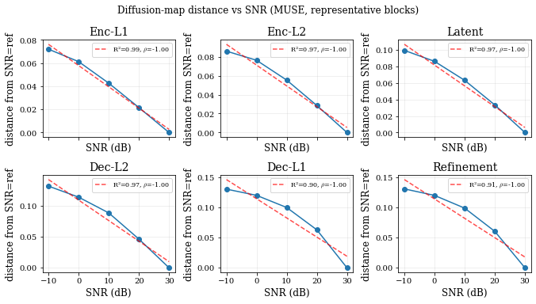
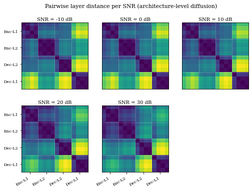

Diffusion#
Two views of the diffusion-map manifold. First, per-layer diffusion distance from the SNR=ref reference, traced across the SNR sweep for the six representative MUSE blocks; the per-block Spearman ρ summarises monotonicity. Second, the architecture-level pairwise distance between layer centroids in diffusion-coordinate space, plotted as a heatmap at six SNR slices; layers are reordered into architectural order (Enc-L1, Enc-L2, Dec-L2, Dec-L1). Both views recover the same depth-and-block structure as the CKA-based analyses.
Runtime: about a minute on any device.
import sys
from pathlib import Path
REPO = Path.cwd().resolve()
while REPO.name != "SE-Probe" and REPO.parent != REPO:
REPO = REPO.parent
if str(REPO) not in sys.path:
sys.path.insert(0, str(REPO))
from se_probe.device import device_info, get_device
from se_probe.plotting import MODEL_COLORS, apply_paper_rcparams
apply_paper_rcparams()
DEVICE = get_device()
print(device_info(DEVICE))
import pandas as pd
DATA_DIR = REPO / ("results_df" if (REPO / "results_df").exists() else "results_demo")
print(f"Using data from: {DATA_DIR}")
Detected device: cpu
Using data from: /home/runner/work/SE-Probe/SE-Probe/results_demo
Figure 1, Per-layer diffusion distance vs SNR#
We load the per-layer diffusion-map table at diffusion time t=0.5. Helpers create_psi_column and compute_distance_from_ref_snr collapse the psi_* columns into a single psi vector per row and compute Euclidean distance to the SNR=ref reference.
from se_probe.diffusion_analysis import (
BLOCK_NAMES,
REPRESENTATIVE_LAYERS,
compute_distance_from_ref_snr,
create_psi_column,
)
full = DATA_DIR / "diffusion_maps/diffusion_maps_per_layer_t0.5.parquet"
demo = DATA_DIR / "diffusion_maps_per_layer_demo.parquet"
psi_path = full if full.exists() else demo
if not psi_path.exists():
raise FileNotFoundError(
f"Diffusion-map parquet not found. Looked at:\n {full}\n {demo}\n"
"Run `python scripts/build_demo_subset.py` to populate results_demo/, "
"or `python scripts/setup.py --full-data` for the full HuggingFace snapshot."
)
psi_df = pd.read_parquet(psi_path)
psi_df = create_psi_column(psi_df)
ref_snr = float(psi_df["snr"].max())
psi_df = compute_distance_from_ref_snr(psi_df, ref_snr=ref_snr, verbose=False)
print(f"Loaded {len(psi_df):,} rows; reference SNR = {ref_snr:g}")
Loaded 120 rows; reference SNR = 30
import numpy as np
from scipy import stats
available = [(L, B) for L, B in zip(REPRESENTATIVE_LAYERS, BLOCK_NAMES)
if L in set(psi_df["layer"].unique())]
if not available:
raise RuntimeError("None of REPRESENTATIVE_LAYERS are present in the loaded diffusion-map table.")
rows = []
for layer, block in available:
g = psi_df[psi_df["layer"] == layer].dropna(subset=["dist"])
cell = g.groupby("snr", as_index=False)["dist"].mean().sort_values("snr")
if len(cell) < 2:
continue
x, y = cell["snr"].to_numpy(dtype=float), cell["dist"].to_numpy(dtype=float)
rho, _ = stats.spearmanr(x, y)
slope, intercept, r, _, _ = stats.linregress(x, y)
rows.append({"block": block, "layer": layer, "x": x, "y": y,
"slope": slope, "intercept": intercept, "r2": r ** 2, "rho": rho})
summary = pd.DataFrame([{k: v for k, v in r.items() if k not in ("x", "y")} for r in rows])
summary.round(3)
| block | layer | slope | intercept | r2 | rho | |
|---|---|---|---|---|---|---|
| 0 | Enc-L1 | TCFTransformer.encoder_level1.mhca_blks.0.tran... | -0.002 | 0.058 | 0.986 | -1.0 |
| 1 | Enc-L2 | TCFTransformer.encoder_level2.mhca_blks.0.tran... | -0.002 | 0.071 | 0.971 | -1.0 |
| 2 | Latent | TCFTransformer.latent.mhca_blks.0.transformer_... | -0.003 | 0.082 | 0.975 | -1.0 |
| 3 | Dec-L2 | TCFTransformer.decoder_level2.mhca_blks.0.tran... | -0.003 | 0.109 | 0.965 | -1.0 |
| 4 | Dec-L1 | TCFTransformer.decoder_level1.mhca_blks.0.tran... | -0.003 | 0.114 | 0.903 | -1.0 |
| 5 | Refinement | TCFTransformer.mag_refinement.mhca_blks.0.tran... | -0.003 | 0.115 | 0.913 | -1.0 |
import matplotlib.pyplot as plt
ncols = 3
nrows = max(1, (len(rows) + ncols - 1) // ncols)
fig, axes = plt.subplots(nrows, ncols, figsize=(9.5, 2.7 * nrows), sharex=True)
axes = np.atleast_1d(axes).flatten()
for ax, r in zip(axes, rows):
ax.plot(r["x"], r["y"], marker="o", color=MODEL_COLORS["muse"])
xs = np.linspace(r["x"].min(), r["x"].max(), 50)
ax.plot(xs, r["slope"] * xs + r["intercept"], linestyle="--", color="red", alpha=0.7,
label=fr"R²={r['r2']:.2f}, $\rho$={r['rho']:.2f}")
ax.set_title(r["block"])
ax.set_xlabel("SNR (dB)")
ax.set_ylabel("distance from SNR=ref")
ax.grid(True, alpha=0.25)
ax.legend(fontsize=8, loc="best")
for ax in axes[len(rows):]:
ax.set_visible(False)
fig.suptitle("Diffusion-map distance vs SNR (MUSE, representative blocks)", fontsize=12)
plt.tight_layout()

Figure 2, Pairwise layer distance per SNR (architecture-level)#
The second view is computed at the architecture level (blocks rather than per-layer norms). We load the diffusion-map table at t=5 and compute the pairwise Euclidean distance between layer centroids in the diffusion-coordinate space, then plot the per-SNR distance matrix. Layers are reordered into architectural order (Enc-L1, Enc-L2, Dec-L2, Dec-L1).
from se_probe.diffusion_analysis import (
BLOCK_ORDER,
compute_layer_distance_matrix,
get_layer_order_key,
)
arch_full = DATA_DIR / "diffusion_maps/diffusion_maps_architecture_t5.parquet"
arch_demo = DATA_DIR / "diffusion_maps_architecture_demo.parquet"
arch_path = arch_full if arch_full.exists() else arch_demo
if not arch_path.exists():
raise FileNotFoundError(
f"Architecture-level diffusion parquet not found. Looked at:\n {arch_full}\n {arch_demo}\n"
"Run `python scripts/build_demo_subset.py` to populate results_demo/."
)
arch_df = pd.read_parquet(arch_path)
arch_df = create_psi_column(arch_df)
print(f"Loaded {len(arch_df):,} architecture-level rows; SNRs = {sorted(arch_df['snr'].unique())}")
Loaded 80 architecture-level rows; SNRs = [np.float64(-10.0), np.float64(0.0), np.float64(10.0), np.float64(20.0), np.float64(30.0)]
layer_distance_matrices = compute_layer_distance_matrix(arch_df)
snr_values = sorted(arch_df["snr"].unique())
if len(snr_values) > 6:
snr_values = sorted(set([snr_values[0], snr_values[len(snr_values)//4],
snr_values[len(snr_values)//2], snr_values[3*len(snr_values)//4],
snr_values[-2], snr_values[-1]]))
first_snr = next(iter(layer_distance_matrices))
layers = layer_distance_matrices[first_snr]["layers"]
encoder_layers = sorted([L for L in layers if "encoder" in L.lower()])
decoder_l2 = sorted([L for L in layers if "decoder_level2" in L.lower()])
decoder_l1 = sorted([L for L in layers if "decoder_level1" in L.lower()])
all_layers = encoder_layers + decoder_l2 + decoder_l1
block_size = max(1, len(all_layers) // len(BLOCK_ORDER))
fig, axes = plt.subplots(2, 3, figsize=(8.5, 5.4),
gridspec_kw={"wspace": 0.05, "hspace": 0.25})
axes = axes.flatten()
for idx, snr_val in enumerate(snr_values[:6]):
ax = axes[idx]
if snr_val in layer_distance_matrices:
dist_mat = layer_distance_matrices[snr_val]["matrix"]
layer_list = layer_distance_matrices[snr_val]["layers"]
order = sorted(enumerate(layer_list), key=lambda x: get_layer_order_key(x[1]))
new_idx = [i for i, _ in order]
mat = dist_mat[np.ix_(new_idx, new_idx)]
dmin, dmax = np.nanmin(mat), np.nanmax(mat)
mat_norm = (mat - dmin) / (dmax - dmin) if dmax > dmin else np.zeros_like(mat)
else:
mat_norm = np.zeros((len(all_layers), len(all_layers)))
ax.imshow(mat_norm, interpolation="nearest", aspect="equal", cmap="viridis", vmin=0.0, vmax=1.0)
ax.set_title(f"SNR = {int(snr_val)} dB", pad=4, fontsize=10)
for j in range(1, len(BLOCK_ORDER)):
pos = j * block_size - 0.5
ax.axhline(pos, color="white", lw=0.6, ls=":", alpha=0.9)
ax.axvline(pos, color="white", lw=0.6, ls=":", alpha=0.9)
tick_pos = [j * block_size + block_size/2 - 0.5 for j in range(len(BLOCK_ORDER))]
row, col = divmod(idx, 3)
if col == 0:
ax.set_yticks(tick_pos)
ax.set_yticklabels(BLOCK_ORDER, fontsize=8)
else:
ax.set_yticks([])
if row == 1:
ax.set_xticks(tick_pos)
ax.set_xticklabels(BLOCK_ORDER, rotation=30, ha="right", fontsize=8)
else:
ax.set_xticks([])
for ax in axes[len(snr_values[:6]):]:
ax.set_visible(False)
fig.suptitle("Pairwise layer distance per SNR (architecture-level diffusion)", fontsize=11)
plt.tight_layout()
/tmp/ipykernel_2294/538993602.py:59: UserWarning: This figure includes Axes that are not compatible with tight_layout, so results might be incorrect.
plt.tight_layout()
